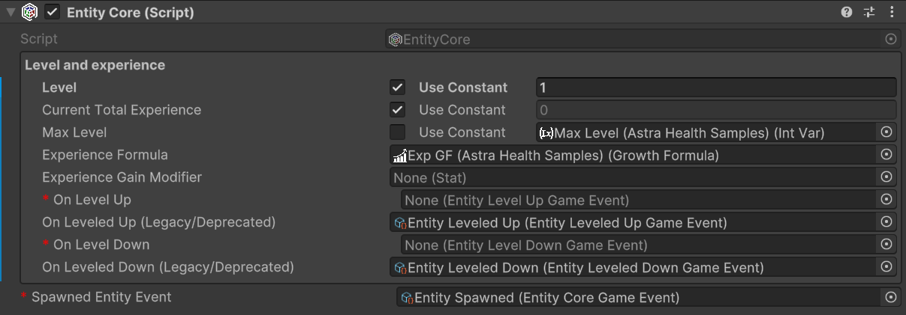
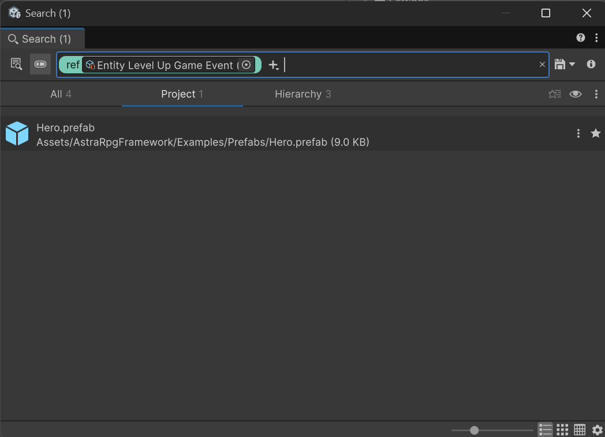
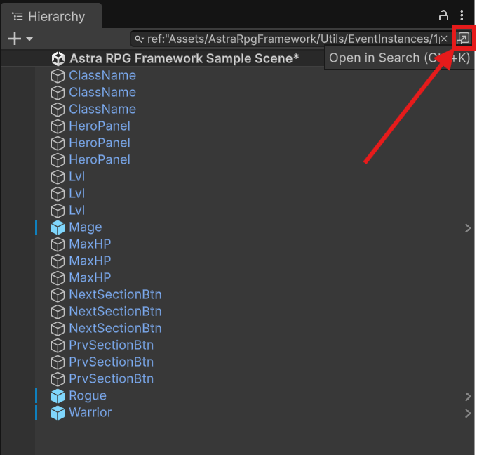
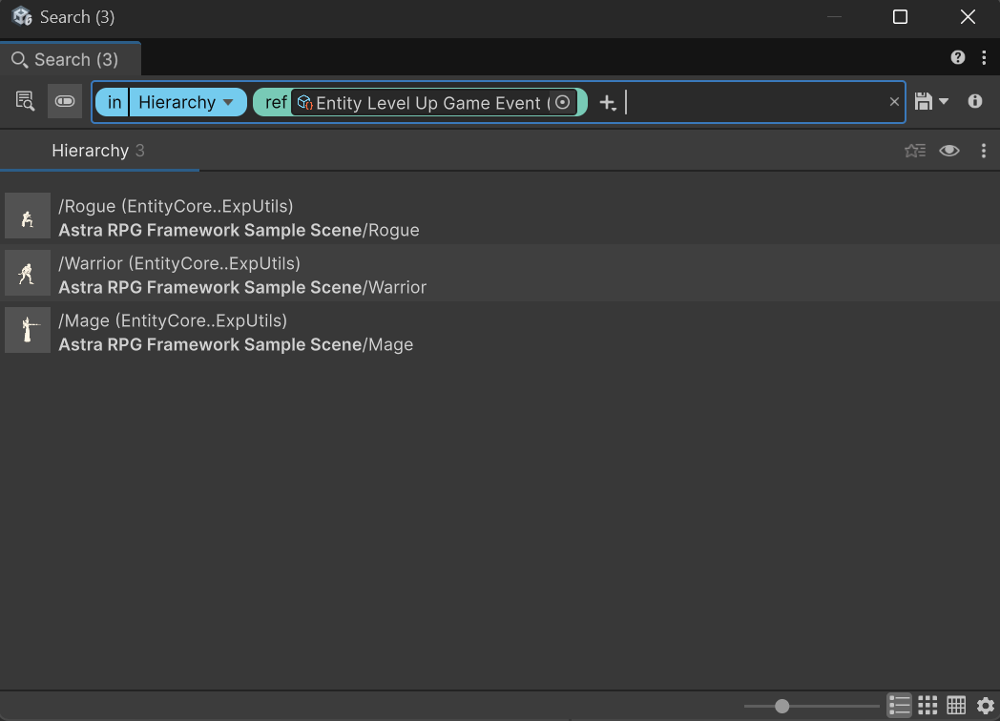

Migration Guide
Migrating to v1.4.0
v1.4.0 introduces the new GameAction system and moves Game Events to a single-context parameter (Parameter Object pattern). This change improves extensibility and simplifies integration with GameAction because both systems now use a single context and are compatible with UnityEvent.
Key benefits
- Easier, non-breaking extension of event data via a single context object and polymorphism.
- Seamless interoperability with GameAction and UnityEvent-based listeners.
Breaking change
- The legacy
EntityLeveledUpGameEvent,EntityLeveledDownGameEventand their dedicated listeners are deprecated. EntityStatsandEntityAttributesnow subscribe the new EntityCore's single-parameter events internally.
Migration steps - breaking changes
- Back up your project before making changes.
- Either create the new
EntityLevelUpGameEventandEntityLevelDownGameEventinstances from the context menu (Create > Astra RPG Framework > Game Events > Generated > Entity Level UpandEntity Level Down), or import the new event instances from the updated v1.4.0Utilssamples (Utils > EventInstances > 1param > Entity Level Up Game EventandEntity Level Down Game Event). If you re-import samples, prefer removing duplicate assets from the newly imported samples. Keep only the new events instances. - For each entity (prefab or scene object) open the
EntityCoreinspector and assign to the newOn Level UpandOn Level Downevent fields to the new single-parameter event instances just created. The fields for the new events are marked as required (red asterisk), while the deprecated events fields are optional and marked with(Legacy/Deprecated). The inspector, before assigning the new events, should look like this:

Migration steps - changing deprecated events
Manual and obsolete EntityLeveledUpGameEvent, EntityLeveledDownGameEvent (and the respective listeners) you used across your project are still supported, but will not be any more in future versions of the framework; At the moment, EntityLevel will raise both the deprecated event as well as the new event when the level changes. However, migrate your project to the new events when it is convenient for you to use the new single-parameter events and listeners and align with the new standard.
To update them, I suggest to search your project and scenes for usages of the deprecated EntityLeveledUpGameEvent and EntityLeveledDownGameEvent. To do this, I would suggest you to use the Unity Editor search functionality:
- Right-click on the scriptable object instance of the deprecated event you want to search for (e.g.,
Entity Leveled Up Game Event). - Select
Find References In Project. A window like this will open:

- Inspect the found references to identify where you used the deprecated event and update them to use the new
EntityLevelUpGameEventorEntityLevelDownGameEventand/or the respective listeners instead. You'll catch also the GameEvent listeners as they reference the event instance. - Right-click again on the scriptable object instance of the deprecated event and select
Find References In Sceneto find any usage in the currently opened scene. You will see the hierarchy window changed, but no meaningful references will be shown. However, you can click on the top-right button to open a window similar to the previous one, showing all references in the scene:


- Inspect the found references in the scene and update them to use the new
EntityLevelUpGameEventorEntityLevelDownGameEventand/or the respective listeners instead. - Repeat steps 4-5 for each scene in your project.
- Repeat steps 1-6 for the other deprecated event.
Migrating to v1.1.0
The rebranding of SOAP RPG Framework to Astra RPG Framework involves several changes that need to be addressed when updating existing projects. This guide outlines the necessary steps to ensure a smooth transition.
1. Backup Your Project
Before making any changes, it's crucial to back up your project. Whether you are using version control or simply creating a copy of your project folder, having a backup will allow you to revert to the previous state if anything goes wrong during the migration process.
2. Update the Package from the Package Manager
Open Unity and navigate to the Package Manager (Window -> Package Manager). In the "In This Project" section, locate the SOAP RPG Framework package. Update it to version 1.1.0, which is now listed as Astra RPG Framework.
3. Update Namespaces in Your Code
If your project contains scripts that reference the old SOAP RPG Framework namespaces, you'll need to update these references to the new Astra RPG Framework namespaces. For doing this, you can use your IDE's find-and-replace-all functionality (Ctrl + Shift + R in VSCode):
- Open the find-and-replace dialog in your IDE.
- Type
ElectricDrill.SoapRpgFrameworkand assert that the "Match Case" option is enabled. - Inspect the found occurrences to ensure they are correct.
- Replace all occurrences that makes sense to you with
ElectricDrill.AstraRPGFramework. - Save all modified files.
- Return to Unity and recompile the project. If this is not automatic, you can force recompilation with
Ctrl + R.
If your project compiles correctly, you're done!
If you get errors related to duplicate .asmdef files, follow the next steps.
4. Remove duplicate .asmdef files in the package
- In the hierarchy of your project, navigate to the
Packagesfolder and locate theAstra RPG Frameworkpackage. - Open the
Runtimefolder. - Ensure that there is only one
.asmdeffile namedcom.electricdrill.astra-rpg-framework.Runtime. If you find also a file namedcom.electricdrill.soap-rpg-framework.Runtime, delete it. - Open now the
Editorfolder of the package. - Ensure that there is only one
.asmdeffile namedcom.electricdrill.astra-rpg-framework.Editor. If you find also a file namedcom.electricdrill.soap-rpg-framework.Editor, delete it. - Click on the
com.electricdrill.astra-rpg-framework.Editorfile to select it. In the Inspector window, in theAssembly Definition Referencessection, add the reference tocom.electricdrill.astra-rpg-framework.Runtimeif it's not already present, and delete any reference tocom.electricdrill.soap-rpg-framework.Runtimeif present. - Click on apply to save the changes.
Note
Unity sometimes has unpredictable behaviors when updating .asmdef files in and their references. After applying the changes mentioned above, try also to close and reopen Unity to ensure that the changes are correctly applied. If you still encounter issues, fix the new problems and re-start Unity again. At that point, the changes should be correctly applied.
5. Recompile the Project
If Unity didn't automatically recompile the project after these changes, you can force recompilation.
Your project should now be successfully migrated to Astra RPG Framework v1.1.0.
Happy developing!
Troubleshooting
I re-imported Samples that I already had from v1.0.0 and now I have errors
If you used the ScriptableObject based samples of the Utils folder in your project, you can keep using them as they are fully compatible with the new version. In fact, you should not re-import them as that would create duplicates in your project.
Warning
Do not delete any ScriptableObject based asset that you are using in your project! Delete the duplicates from the newly imported samples instead. This will prevent data loss in your project.
Moreover, it was noticed that re-importing samples in a project that was using v1.0.0 of the package, resulted in old namespaces being used in the samples scripts. This is likely a Unity bug as does not happen on a fresh project.
If this happens, please rename the old ElectricDrill.SoapRpgFramework namespace in the scripts of the samples to ElectricDrill.AstraRPGFramework manually, analogously to what is described in step #3.
Still Need Help?
For any issue during the migration, feel free to reach me out by sending me an email at electricdrill.info@gmail.com